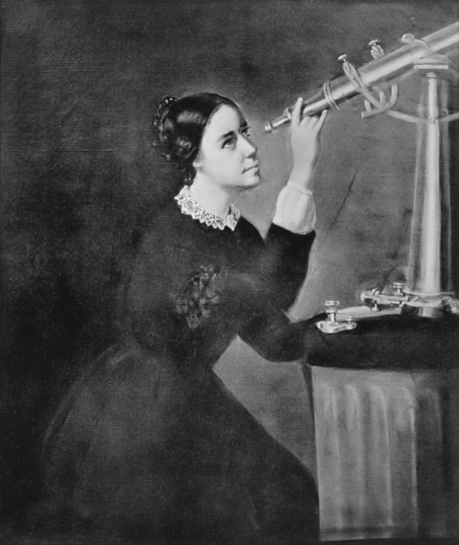
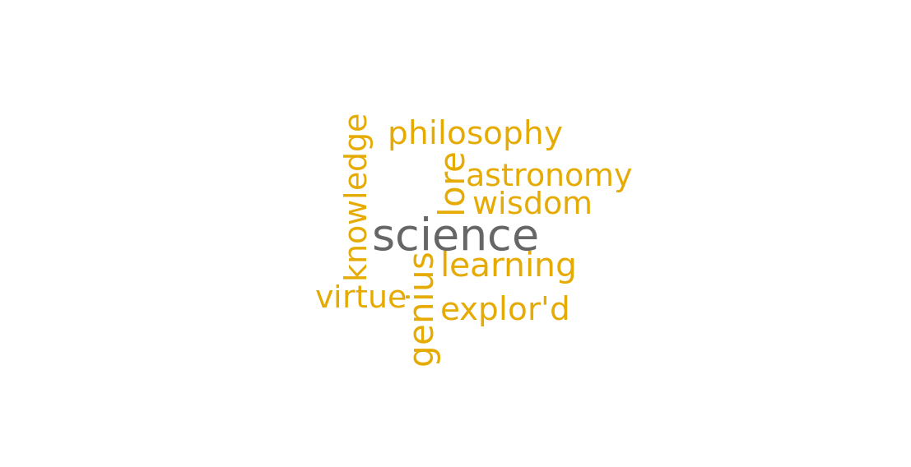
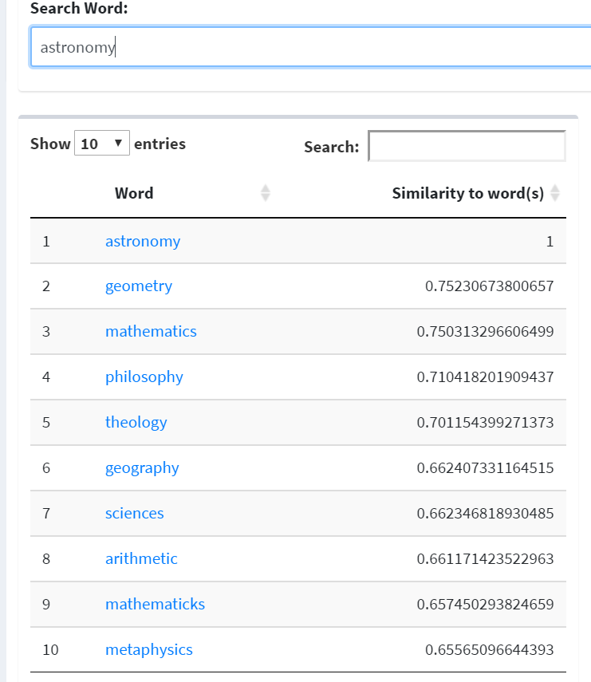

How Science is Reflected in the Women Writers Online Corpus
By Molly Nebiolo
Background
It may be because of my background in biology or the fact that I am currently studying the history of science and medicine in graduate school, but I have long been interested in the way science has evolved in the early modern period. While the term was first coined and used as a replacement for the field of natural philosophy, the subjects that fell under this umbrella of observation and experimentation shifted from the seventeenth to the nineteenth century as natural philosophy transitioned into the field of science. Using the word vector interface (WVI) and the Women Writers Vector Toolkit (WWVT) specifically, I was able to gather information on the ways in which science, natural philosophy, and medicine appeared in the Women Writers Online (WWO) corpus. Below are the results and analysis for this case study. I do want to note that this is a specific analysis of the WWO corpus, and the conclusions for this case study should not be understood as results for the entirety of seventeenth, eighteenth or nineteenth century literature, or female-authored texts in this period as a whole.
Methodology
For this preliminary case study, I ran various inquiries using the full WWO corpus model to look for major trends or interesting patterns in the corpus. From that, I picked the top two interesting results from my research. My hope is that with further case studies and with the formalization of the interface, I can revisit this analysis, run it on more models with various operations, and determine if my below analyses and hypotheses seem to hold up. The purpose of this piece is to exemplify the basic uses of word2vec analysis.
Analysis of Results
From querying the term "science," the word with the highest cosine similarity is genius, followed by lore, learning, philosophy, astronomy and further down the list other words close in meaning to genius—like knowledge and wisdom—ending (in the top ten list, at least) with the word virtue. This initial search is fascinating because it illustrates the strong relationship the idea of the field of science had to being a genius. Genius being, in the early modern period, a term used to denote someone’s spiritor identifying character. From this corpus and result, we can potentially conclude how science seemed to be a subject most related to the ideas of knowledge and intellect, but also the deepest reaches on one’s being. From a gender perspective, it’s interesting to see how women would write about science as if it is a key to wisdom; how there is a relationship between being involved in science and being a genius? The term astronomy, which crops in further down the top-ten list of results, may hold a clue to this relationship. As the collection of this corpus dates to an era where women were still barred from university education and many of the circles men would frequent, the fact that astronomy is the subfield of science that appears in this search shows how women may have been a part of that field, experienced science, or defined what knowledge was. When “astronomy” is then searched in the same full corpus model, the results seem to solidify this hypothesis. “Sciences” shows up as the seventh term in the set of ten results, but “geometry” and “mathematics” have a higher correlation with astronomy. Yet two other terms stand out from the list: theology and philosophy. From a modern perspective, these terms seem highly irrelevant when thinking about the study of the stars, but from an early modern perspective, understandings of space were different. While innovations and discoveries of space were done with mathematics and observation, the deeper understanding of things out there was heavily saturated in religion and the study of existence. It is fascinating to see how these ideas appear in these basic searches, as they reveal the fundamental components of what early modern science was composed of: religion and math.
Potential Error
Due to the experimental status of the models that exist on the WWVT site, I only used the general WWO model, titled “WWO Full Corpus” to run my word analyses. By using word2vec and the Women Writers Online corpus, there are certain challenges when trying to collect data on a subject. For example, it is difficult to analyze all of the terms that are in the top ten results from a general search because the corpus is not large enough to produce smooth trends. Some terms may seem out of place because certain authors wrote against the grain, and the results sometime show these outliers clearly. With word2vec specifically, I think there is a challenge with having to deal with early modern texts because words are spelled differently, and modern researchers may be unaware of how to best utilize these corpora because of that barrier between modern and early modern vocabulary.
Visuals of Data


Conclusion
Studying a corpus of women-authored texts, it is interesting to see trends of how gender may have influenced the way science was perceived and written about by women. Science was most related to words the defined the intellect of a person then describing the people, or spaces science was typically practiced by or in. Instead, science was generally written in this collection to be an occupation of the mind or was related to one’s soul or being. Astronomy was the example that shows up as a common field of science, possibly because stargazing could be done from a balcony or garden, instead of a male-centered space. Mathematics and religion, two key terms when looking at astronomy further, were also things that could be studied at home. Much can be deduced from the words that are most related to these two terms.
I think using word vector analysis—and word2vec models specifically—can help with this type of broad-stroke, thematic understanding of this time period. It can be used to support or deny general claims made about a time period by studying a corpus of writings by women. By verging away from the path of a male-centered narrative of history,, researchers can see what has perforated other communities and continued as a trend for other genders. I think from this initial case study, it can be seen that the word2vec models can be used for broad questions, and from there, researchers can inquire further as long as they are familiar with the corpus and with terms they use for operation searches.